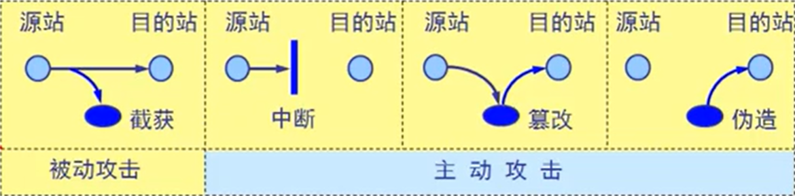
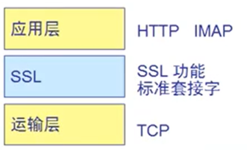
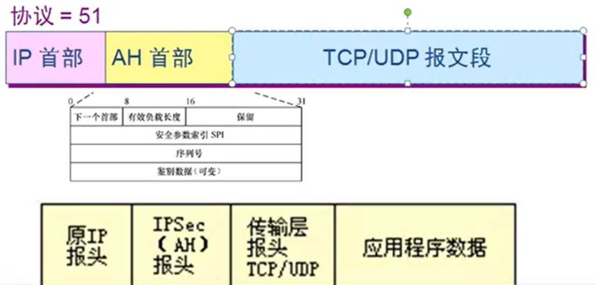
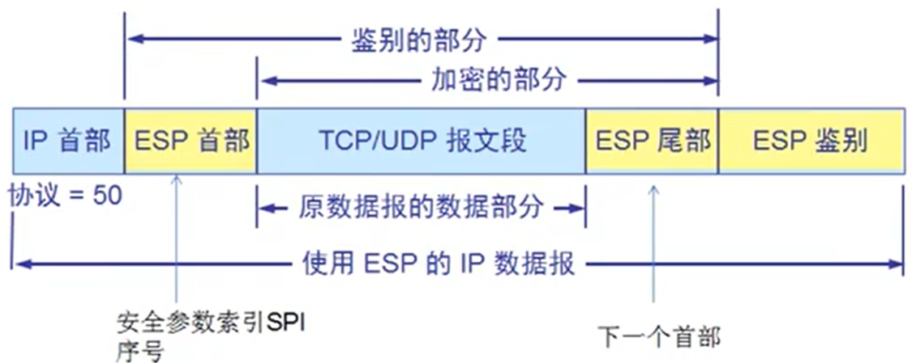
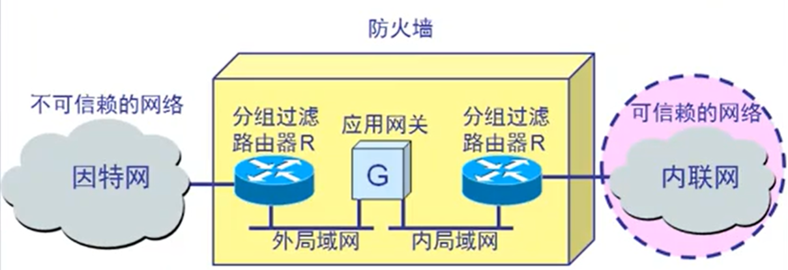
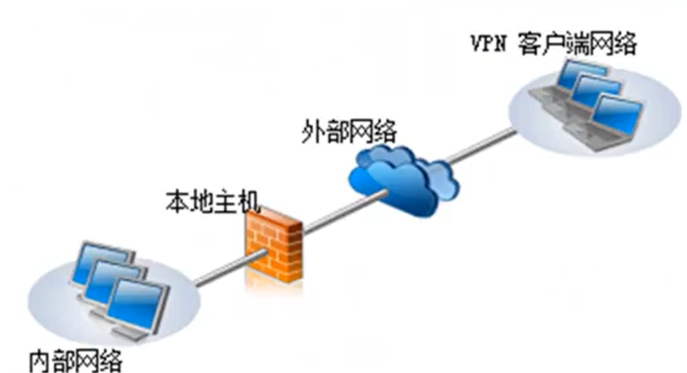
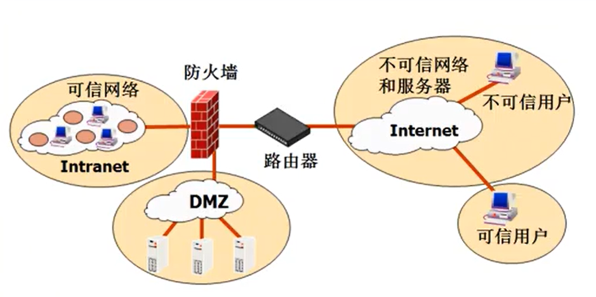
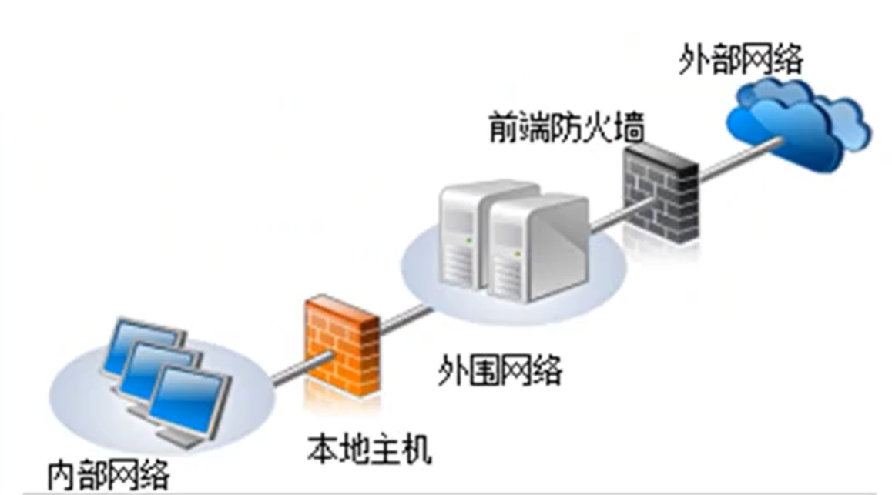
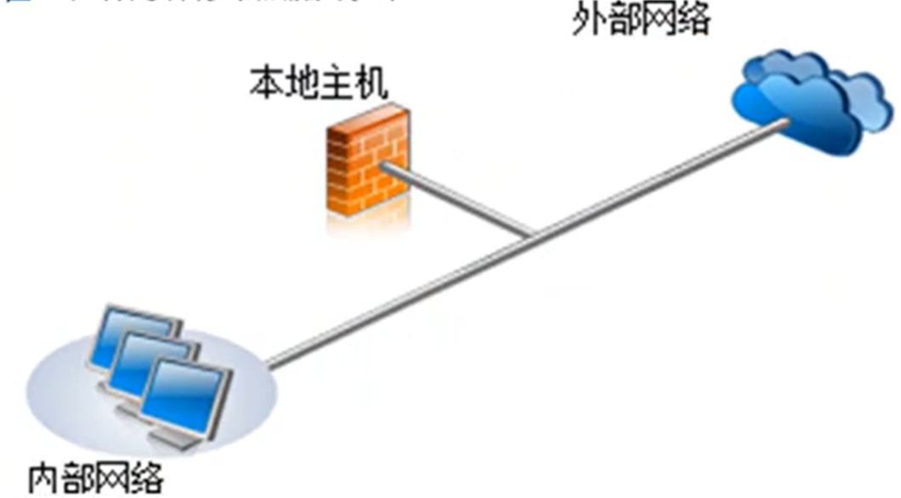

网络安全 链接到标题
安全分类 链接到标题
- 数据存储安全
- 应用程序安全
- 操作系统安全
- 网络安全
- 物理安全
计算机网络上的通信面临以下四种威胁： 链接到标题

- 截获——从网络上窃听他人通信内容
- 中断——有意中断他人在网络上的通信
- 篡改——故意篡改网络上传送的报文
- 伪造——伪造信息在网络上传送
接获信息的攻击称为被动攻击，而更改信息和拒绝用户使用资源的攻击称为主动攻击。
例：ARP 欺骗，CAIN 通过 ARP 欺骗，伪装成网关地址，可以篡改 DNS 解析结果，也能获取密码。
被动攻击与主动攻击 链接到标题
- 中断——拒绝服务式攻击 例：Dos 拒绝服务式攻击，通过发送没用数据包阻断网络，占用大量下载带宽；DDos 分布式攻击，通过在网络中寻找并控制有漏洞的服务器，给指定的服务器发数据包使该服务器瘫痪。
- 篡改——修改域名解析结果 例：用 ARP 欺骗将用户想访问的网站指向钓鱼网站，骗取账号密码等。
- 伪造——伪装网关 例：ARP 欺骗，将寻找网关的主机发送的报文截取，然后将自身主机伪装成网关。
恶意程序 链接到标题
- 计算机病毒——会传染其他程序，通过修改其他程序来把自身或其变种复制进去完成的
- 计算机蠕虫——通过网络的通信功能将自身从一个节点发送到另一个节点并启动运行的程序
- 特洛伊木马——某种程序，它执行的功能超出所声称的功能
- 逻辑炸弹——一种当运行环境满足某种特定条件时执行其他特殊功能的程序
加密技术 链接到标题
对称加密 链接到标题
所谓对称，就是采用这种加密方法的双方使用方式用同样的密钥进行加密和解密。密钥是控制加密及解密过程的指令。算法是一组规则，规定如何进行加密和解密。
原理举例： 链接到标题
甲和乙是一对生意搭档，他们住在不同的城市。由于生意上的需要，他们经常会相互之间邮寄重要的货物。为了保证货物的安全，他们商定制作一个保险盒，将物品放入其中。他们打造了两把相同的钥匙分别保管，以便在收到包裹时用这个钥匙打开保险盒，以及在邮寄货物前用这把钥匙锁上保险盒。
上面是一个将重要资源安全传递到目的地的传统方式，只要甲乙小心保管好钥匙，那么就算有人得到保险盒，也无法打开。这个思想被用到了现代计算机通信的信息加密中。在对称加密中，数据发送方将明文（原始数据）和加密密钥一起经过特殊加密算法处理后，使其变成复杂的加密密文发送出去。接收方收到密文后，若想解读原文，则需要使用加密密钥及相同算法的逆算法对密文进行解密，才能使其恢复成可读明文。在对称加密算法中，使用的密钥只有一个，发收信双方都使用这个密钥对数据进行加密和解密。
优点：效率高 缺点：密匙不适合在网上传输，密匙维护麻烦
非对称加密 链接到标题
工作原理 链接到标题
- A 要向 B 发送信息，A 和 B 都要产生一对用于加密和解密的公钥和私钥。
- A 的私钥保密，A 的公钥告诉 B；B 的私钥保密，B 的公钥告诉 A。
- A 要给 B 发送信息时，A 用 B 的公钥加密信息，因为 A 知道 B 的公钥。
- A 将这个消息发给 B（已经用 B 的公钥加密消息）。
- B 收到这个消息后，B 用自己的私钥解密 A 的消息。其他所有收到这个报文的人都无法解密，因为只有 B 才有 B 的私钥。
特点 链接到标题
加密秘钥和解密秘钥是不同的一对秘钥
公钥加密私钥解密，私钥加密公钥解密
使用数字签名，防止抵赖，能够检查签名之后内容是否被更改
数据加密标准 DES 链接到标题
DES 属于常规密钥密码体制，是一种分组密码。在加密前，先对整个明文进行分组，每一个组长为 64 位，然后对每一个位二进制数据进行加密处理，产生一组 64 位密文数据，最后将各组密文串联起来，即得出整个的密文。
使用的密钥位 64 位，实际密钥长度为 56 位，还有 8 位用于奇偶效验。
DES 的保密性 链接到标题
DES 的保密性仅取决于对密钥的保密，而算法时公开的。尽管人们在破译 DES 方面取得了许多进展，但至今仍未能找到比穷举搜索密钥更有效的方法。
DES 是世界上第一个公认的使用密码算法标准，他曾对密码学的发展做出了重大贡献。
目前较为严重的问题是 DES 的密钥长度，现在已经设计出来搜索 DES 密钥的专用芯片.
DES 算法公开取决于密钥长度，56 位密钥破解需要 3.5 或 21 分钟，128 位密钥破解需要 5.4*10^18 次方年。
安全套接字 SSL 链接到标题
SSL 的位置在应用层和传输层之间，优点是应用层和传输层都不需要来加密。不需要应用层的支持，但是需要在服务器配置证书。

在发送方，SSL 接收应用层的数据(如 HTTP 或 IMAP 报文)，对数据进行加密，然后把加密的数据送往 TCP 套接字，在接收方，SSL 从 TCP 套接字读取数据，解密后把数据交给应用层。
SSL 提供的功能 链接到标题
- SSL 服务器鉴别 允许用户证实服务器的身份。具有 SSL 功能的浏览器维持一个表，上面有一些可信赖的认证中心 CA(Certificae Authority)和它们的公钥。
- 加密的 SSL 会话 客户和服务器交互的所有数据都在发送方加密，在接收方解密。
- SSL 客户鉴别 允许服务器证实客户的身份。
- CA，证书颁发机构，为企业和用户颁发数字证书，确保这些企业与用户的身份是否可靠，如果证书丢失需要发布吊销列表，企业和个人需要信任证书颁发机构。
SSL 加密步骤 链接到标题
用户使用浏览器去访问某服务器端的网站，此时网站会把他的公钥给用户浏览器，浏览器通过校验 CA 证书确保该网站的公钥是可靠的，浏览器会产生一个对称密钥，浏览器使用网站的公钥对它的对称密钥进行加密，发给该网站，网站用它的私钥进行解密，就得到了用户浏览器的对称密钥。
安全协议 链接到标题
- Https = TCP + 443
- IMAPS = TCP + 993
- POPS = TCP + 995
- SMTPS = TCP + 465
网络层安全 IPSec 链接到标题
安全关联 SA(Security Association) 链接到标题
在使用 AH 或 ESP 之前，先要从源主机到目的主机建立一条网络层的逻辑链接，此逻辑连接叫做安全关联 SA。
IPsec 就把传统的因特网无连接的网络层转换为具有逻辑链接的层。
SA(安全关联)是构成 IPSec 的基础，是两个通信实体经协商(利用 IKE 协议)建立起来的一种协定，它决定了用来保护数据分组安全的安全协议(AH 协议或者 ESP 协议)，转码方式，密钥即密钥的有效存在时间等。
IPSec 中最主要的协议 链接到标题
鉴别首部 AH(Authentication Header)：AH 鉴别源点和检查数据完整性，但不能保密。
封装安全有效载荷 ESP(Encapsulation Security Payload):ESP 比 AH 复杂得多，它鉴别源点，检查数据完整性和提供保密。
- 鉴别首部协议 AH

在使用鉴别首部协议 AH 时，把 AH 首部插在原数据报数据部分前，同时把 IP 首部中的协议字段置为 51.
在传输过程中，中间的路由器都不查看 AH 首部。当数据包到达终点时，目的主机才处理 AH 字段，以鉴别源点和检查数据包的完整性。
- 封装安全有效载荷 ESP

使用 ESP 时，IP 数据报首部的协议字段置为 50，当 IP 首部检查到协议字段是 50 时，就知道在 IP 首部后面紧接着的是 ESP 首部，同时在原 IP 数据报后面增加了两个字段，即 ESP 尾部和 ESP 数据。
防火墙(firewall) 链接到标题
防火墙是由软件，硬件构成的系统，是一种特殊编程的路由器，用来在两个网络之间实施接入控制策略，接入控制策略是由使用防火墙的单位自行制订的，为的是可以最适合本单位的需要。
防火墙内的网络称为“可信赖网络”(trusted network),而将外部的因特网称为“不可信赖的网络”(untrusted network)。
防火墙可用来解决内联网和外联网的安全问题。
防火墙在互联网中的位置 链接到标题

防火墙技术一般分为两类 链接到标题
- 网络级防火墙 用来防止整个网络出现外来非法入侵，属于这类的有分组过滤和授权服务器。前者检查所有流入本网络的信息，然后拒绝不符合事先制订好的一套准测的数据，而后者则是检查用户的登陆是否合法。
- 应用级防火墙 从应用程序来进行接入控制，通常使用应用网关或代理服务器来区分各种应用。例如，可以只允许通过访问万维网的应用，而阻止 FTP 应用的通过。
防火墙的结构 链接到标题
边缘防火墙

三向外围网

背靠背防火墙

单一网卡防火墙
